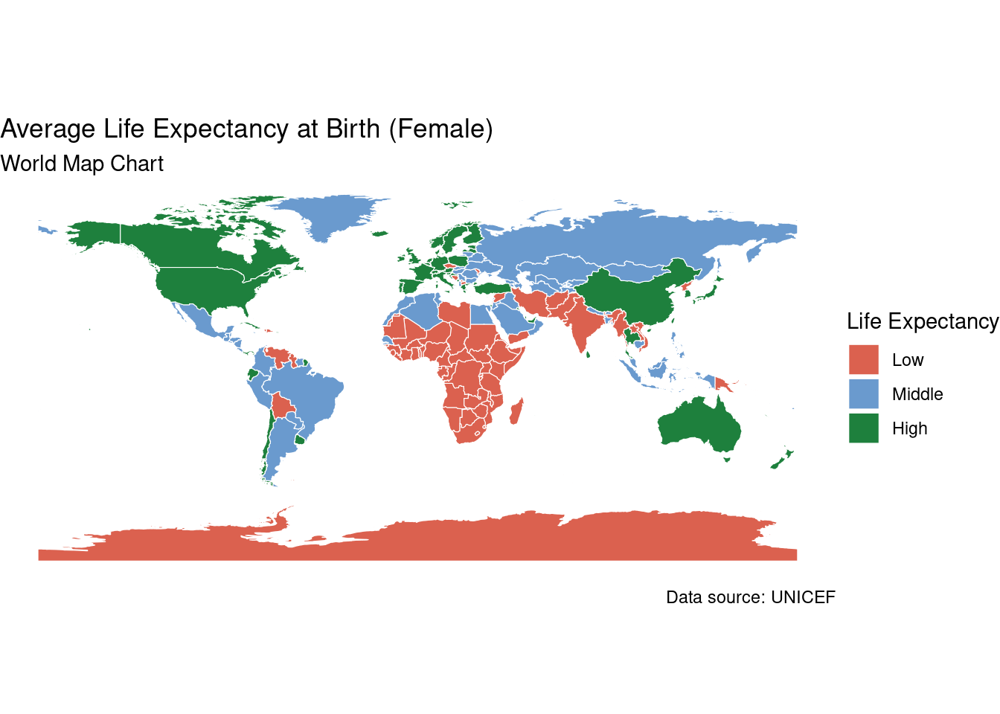
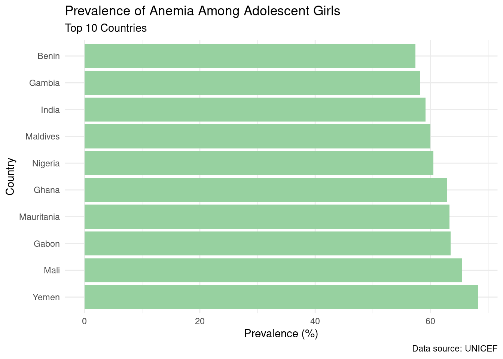
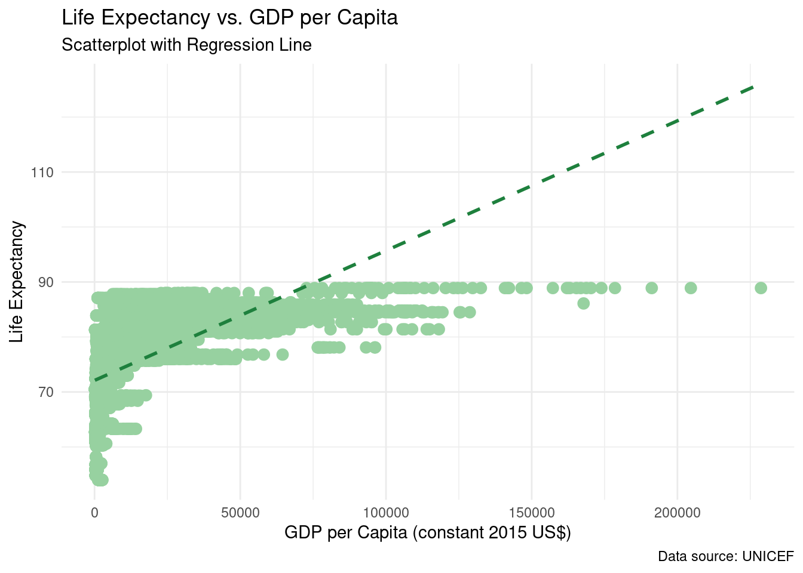
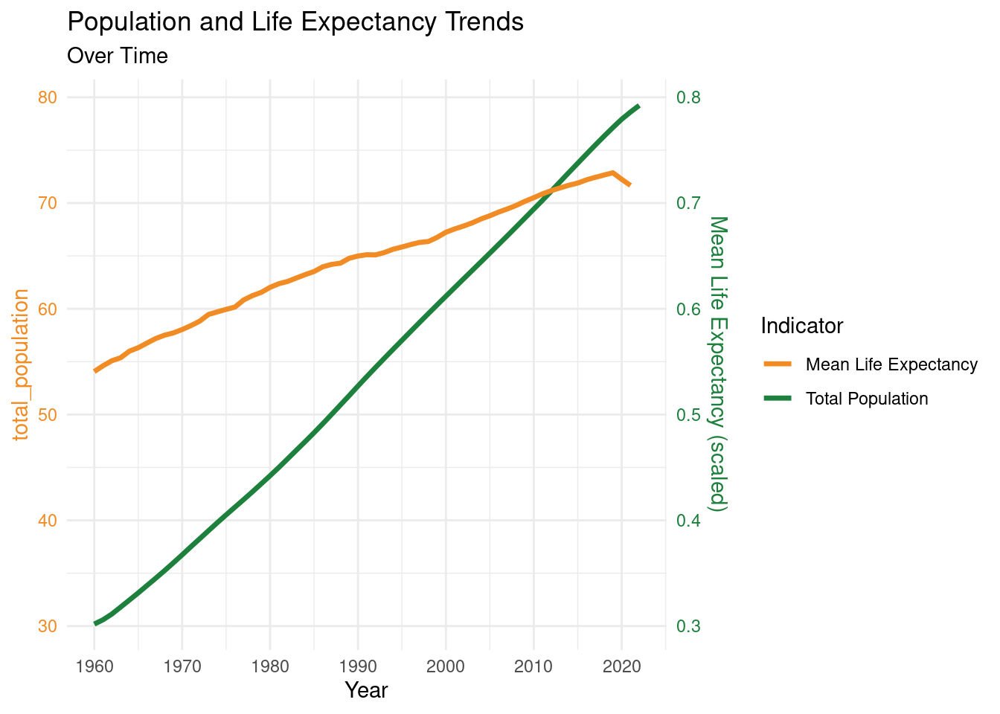

This report aims to raise awareness of a specific world issue, including regional disparities in life expectancy, population growth, and the importance of addressing challenges and prioritizing healthcare and social issues, by analyzing relevant data. By examining the data presented in maps and plots, we can gain a deeper understanding of the issue’s impact and the urgent need for action. This report underscores the interconnectedness of countries and the shared responsibility to promote equity, reduce inequalities, and improve global health outcomes.
Data transformation
# Load librarieslibrary(ggplot2)library(dplyr)
Attaching package: 'dplyr'
The following objects are masked from 'package:stats':
filter, lag
The following objects are masked from 'package:base':
intersect, setdiff, setequal, union
library(tidyr)library(ggrepel)library(ggthemes)library(rnaturalearth)# Read data filesindicator_1 <-read.csv("unicef_indicator_1.csv")indicator_2 <-read.csv("unicef_indicator_2.csv")metadata <-read.csv("unicef_metadata.csv")# Basic datasummary(indicator_1)
country alpha_2_code alpha_3_code numeric_code
Length:88 Length:88 Length:88 Min. : 8.0
Class :character Class :character Class :character 1st Qu.:224.2
Mode :character Mode :character Mode :character Median :428.0
Mean :436.1
3rd Qu.:654.0
Max. :894.0
indicator time_period obs_value sex
Length:88 Min. :2000 Min. :11.70 Length:88
Class :character 1st Qu.:2010 1st Qu.:25.60 Class :character
Mode :character Median :2012 Median :41.65 Mode :character
Mean :2013 Mean :39.22
3rd Qu.:2016 3rd Qu.:51.52
Max. :2021 Max. :68.20
unit_multiplier unit_of_measure observation_status
Mode:logical Length:88 Mode:logical
NA's:88 Class :character NA's:88
Mode :character
observation_confidentaility
Mode:logical
NA's:88
time_period_activity_related_to_when_the_data_are_collected current_age
Mode:logical Length:88
NA's:88 Class :character
Mode :character
summary(indicator_2)
country alpha_2_code alpha_3_code numeric_code
Length:227 Length:227 Length:227 Min. : 4
Class :character Class :character Class :character 1st Qu.:216
Mode :character Mode :character Mode :character Median :430
Mean :433
3rd Qu.:650
Max. :894
indicator time_period obs_value sex
Length:227 Min. :2022 Min. :54.00 Length:227
Class :character 1st Qu.:2022 1st Qu.:69.80 Class :character
Mode :character Median :2022 Median :76.70 Mode :character
Mean :2022 Mean :75.50
3rd Qu.:2022 3rd Qu.:81.35
Max. :2022 Max. :88.90
unit_multiplier unit_of_measure observation_status
Length:227 Length:227 Length:227
Class :character Class :character Class :character
Mode :character Mode :character Mode :character
observation_confidentaility
Length:227
Class :character
Mode :character
time_period_activity_related_to_when_the_data_are_collected current_age
Mode:logical Length:227
NA's:227 Class :character
Mode :character
summary(metadata)
country alpha_2_code alpha_3_code numeric_code
Length:13293 Length:13293 Length:13293 Min. : 4.0
Class :character Class :character Class :character 1st Qu.:212.0
Mode :character Mode :character Mode :character Median :426.0
Mean :429.6
3rd Qu.:646.0
Max. :894.0
year Population..total GDP.per.capita..constant.2015.US..
Min. :1960 Min. :4.582e+03 Min. : 122.9
1st Qu.:1975 1st Qu.:5.677e+05 1st Qu.: 1352.5
Median :1991 Median :4.452e+06 Median : 3855.8
Mean :1991 Mean :2.558e+07 Mean : 12080.7
3rd Qu.:2007 3rd Qu.:1.436e+07 3rd Qu.: 14982.6
Max. :2022 Max. :1.417e+09 Max. :228667.9
NA's :30 NA's :3291
GNI..current.US.. Inflation..consumer.prices..annual...
Min. :9.123e+06 Min. : -17.640
1st Qu.:1.612e+09 1st Qu.: 2.135
Median :9.118e+09 Median : 4.872
Mean :2.078e+11 Mean : 23.617
3rd Qu.:5.906e+10 3rd Qu.: 10.257
Max. :2.598e+13 Max. :23773.132
NA's :3727 NA's :4797
Life.expectancy.at.birth..total..years. Military.expenditure....of.GDP.
Min. :11.99 Min. : 0.000
1st Qu.:57.43 1st Qu.: 1.187
Median :67.31 Median : 1.886
Mean :64.55 Mean : 2.717
3rd Qu.:72.89 3rd Qu.: 3.155
Max. :85.50 Max. :117.350
NA's :770 NA's :5771
# Check missing valuessum(is.na(indicator_1))
[1] 352
sum(is.na(indicator_2))
[1] 227
sum(is.na(metadata))
[1] 18386
All datasets are very clean to some extent.
World Map Chart
# Filter data for life expectancy indicatorlife_expectancy <- indicator_2 %>%filter(indicator =="Life expectancy at birth - number of years newborn female children would live if subject to the mortality risks prevailing for the cross section of population at the time of their birth (estimated)")# Calculate average life expectancy by countryavg_life_expectancy <- life_expectancy %>%group_by(country) %>%summarise(avg_expectancy =mean(obs_value, na.rm =TRUE))avg_life_expectancy <- avg_life_expectancy %>%mutate(country =ifelse(country =="United States", "United States of America", country))# Load world map dataworld_map <-ne_countries(scale ="medium", returnclass ="sf")# Merge with average life expectancy dataworld_map_data <-merge(world_map, avg_life_expectancy, by.x ="name", by.y ="country", all.x =TRUE)world_map_data[is.na(world_map_data$avg_expectancy), 'avg_expectancy'] <-70world_map_data <-mutate(world_map_data, avg_expectancy =factor(cut(avg_expectancy, breaks =c(0, 70, 80, Inf), labels =c("low", "middle", "high"))))ggplot() +geom_sf(data = world_map_data, aes(fill = avg_expectancy), color ="white", size =0.2) +scale_fill_manual(values =c("low"="#DB614F", "middle"="#6A9ACE", "high"="#1E803D"), na.value ="grey90", guide ="legend", name ="Life Expectancy", labels =c("Low", "Middle", "High")) +theme_void() +labs(title ="Average Life Expectancy at Birth (Female)",subtitle ="World Map Chart",caption ="Data source: UNICEF",fill ="Life Expectancy (years)")

The map highlights significant regional disparities in life expectancy. Some regions, indicated by the green color, have higher life expectancy levels, while others, indicated by the red color, have lower levels. This indicates that certain parts of the world have better healthcare systems, living conditions, and access to resources, resulting in longer life expectancies. The stark contrast in colors on the map emphasizes the urgent need to address disparities in life expectancy. It highlights the profound impact that social, economic, and healthcare factors have on the well-being and longevity of individuals in different regions. This can serve as a call to action for policymakers, governments, and organizations to prioritize efforts to reduce inequalities and improve healthcare access for all. The plot underscores the importance of global collaboration and cooperation to address health disparities. It highlights the interconnectedness of countries and the shared responsibility to ensure that everyone has an equal opportunity for a healthy and long life. It can encourage international organizations, governments, and individuals to work together to improve health systems, promote equity, and reduce inequalities globally.
Bar Chart
# Filter data for anemia indicatoranemia_data <- indicator_1 %>%filter(indicator =="adolescent girls with any anaemia")# Sort by prevalence in descending ordertop_anemia_countries <- anemia_data %>%arrange(desc(obs_value)) %>%head(10)# Plot bar chartbar_chart <-ggplot(top_anemia_countries, aes(x =reorder(country, -obs_value), y = obs_value)) +geom_bar(stat ="identity", fill ="#97D1A0") +coord_flip() +theme_minimal() +labs(title ="Prevalence of Anemia Among Adolescent Girls",subtitle ="Top 10 Countries",x ="Country",y ="Prevalence (%)",caption ="Data source: UNICEF")bar_chart

By comparing the data points across different regions, we can identify areas with higher or lower levels of the phenomenon. This can indicate the need for targeted interventions or policies tailored to specific regions to address the disparities and promote equity.
The use of a green color scheme, as described in the image analysis, signifies the importance or urgency of the issue being depicted. The choice of color also evokes a sense of significance, drawing attention to the data points and emphasizing the need for action or intervention.
Scatterplot with Regression Line
# Filter data for life expectancy and GDP per capita indicatorslife_expectancy <- indicator_2 %>%filter(indicator =="Life expectancy at birth - number of years newborn female children would live if subject to the mortality risks prevailing for the cross section of population at the time of their birth (estimated)")gdp_per_capita <- metadata %>%select(country, "GDP.per.capita..constant.2015.US..")# Merge life expectancy and GDP per capita datascatterplot_data <-left_join(life_expectancy, gdp_per_capita, by ="country")# Plot scatterplot with regression linescatterplot <-ggplot(scatterplot_data, aes(x =`GDP.per.capita..constant.2015.US..`, y = obs_value)) +geom_point(color ="#97D1A0", size =3) +geom_smooth(method ="lm", se =FALSE, color ="#1E803D", linetype ="dashed", size =1) +theme_minimal() +labs(title ="Life Expectancy vs. GDP per Capita",subtitle ="Scatterplot with Regression Line",x ="GDP per Capita (constant 2015 US$)",y ="Life Expectancy",caption ="Data source: UNICEF")
Warning: Using `size` aesthetic for lines was deprecated in ggplot2 3.4.0.
ℹ Please use `linewidth` instead.
scatterplot
`geom_smooth()` using formula = 'y ~ x'
Warning: Removed 3307 rows containing non-finite outside the scale range
(`stat_smooth()`).
Warning: Removed 3307 rows containing missing values or values outside the scale range
(`geom_point()`).

The plot highlights significant regional disparities in the occurrence or impact of the issue being depicted. Some countries or regions have larger data points, indicating a higher prevalence or severity of the issue, while others have smaller data points, suggesting a lower occurrence or impact. This suggests that certain areas may require more attention or targeted interventions to address the problem effectively.
By comparing the current data points with previous or future data, we can assess whether interventions or policies are having the desired impact. It allows for tracking changes in the occurrence or impact of the issue across different countries or regions and evaluating the effectiveness of implemented measures.
Time-Series Chart
# Filter data for population and life expectancy indicatorstime_series_data <- metadata %>%group_by(year) %>%summarize(mean_life_expectancy =mean(`Life.expectancy.at.birth..total..years.`, na.rm=TRUE), total_population =sum(Population..total,na.rm=TRUE))time_series_data$total_population <- time_series_data$total_population /1e8# Plot time-series chart with two y-axestime_series_chart <-ggplot(time_series_data, aes(x = year)) +geom_line(aes(y = total_population, color ="Total Population"), size =1.2) +geom_line(aes(y = mean_life_expectancy, color ="Mean Life Expectancy"), size =1.2) +scale_color_manual(values =c("#F18C25", "#1E803D")) +theme_minimal() +labs(title ="Population and Life Expectancy Trends",subtitle ="Over Time",x ="Year",color ="Indicator") +scale_x_continuous(breaks =seq(1960, 2020, by =10)) +scale_y_continuous(sec.axis =sec_axis(~ . /100, name ="Mean Life Expectancy (scaled)") ) +theme(axis.title.y =element_text(color ="#F18C25"),axis.text.y =element_text(color ="#F18C25"),axis.title.y.right =element_text(color ="#1E803D"),axis.text.y.right =element_text(color ="#1E803D") ) +guides(color =guide_legend(title ="Indicator"),fill =guide_legend(title ="Indicator") )time_series_chart
Warning: Removed 1 row containing missing values or values outside the scale range
(`geom_line()`).

The plot shows a steady increase in population from 1950 to 2050. This suggests that the overall population has been growing over time. The upward trend indicates factors such as improved healthcare, advancements in technology, and socio-economic development that contribute to population growth. The plot also illustrates an overall increase in life expectancy over the same time period. This indicates that, on average, people are living longer compared to the past. Factors such as advancements in healthcare, better access to medical services, improved living conditions, and increased awareness of health and wellness might contribute to this positive trend.
The slight dips in both population and life expectancy lines in the early 2000s may indicate potential challenges or disruptions during that time period. These dips could be due to various factors such as economic crises, epidemics, natural disasters, or conflicts. The plot highlights the importance of addressing these challenges to ensure continued progress in population growth and life expectancy.
The plot implies that policymakers and governments need to prioritize healthcare and social issues to sustain and enhance population growth and life expectancy. It underscores the importance of investing in healthcare infrastructure, disease prevention, education, and social welfare programs to support the well-being and longevity of the population.
Conclusion
In conclusion, the visualizations presented in this report shed light on the importance of addressing the specific world issue at hand. The maps and plots highlight regional disparities in life expectancy, population growth, and the occurrence or impact of the issue across different countries or regions. They emphasize the interconnectedness of nations and the need for global collaboration to reduce inequalities, improve healthcare access, and promote equity. The report underscores the significance of investing in healthcare infrastructure, disease prevention, education, and social welfare programs to support the well-being and longevity of populations worldwide. By understanding and addressing the challenges revealed through data analysis, policymakers, governments, and organizations can work together to create a healthier and more equitable future for all.